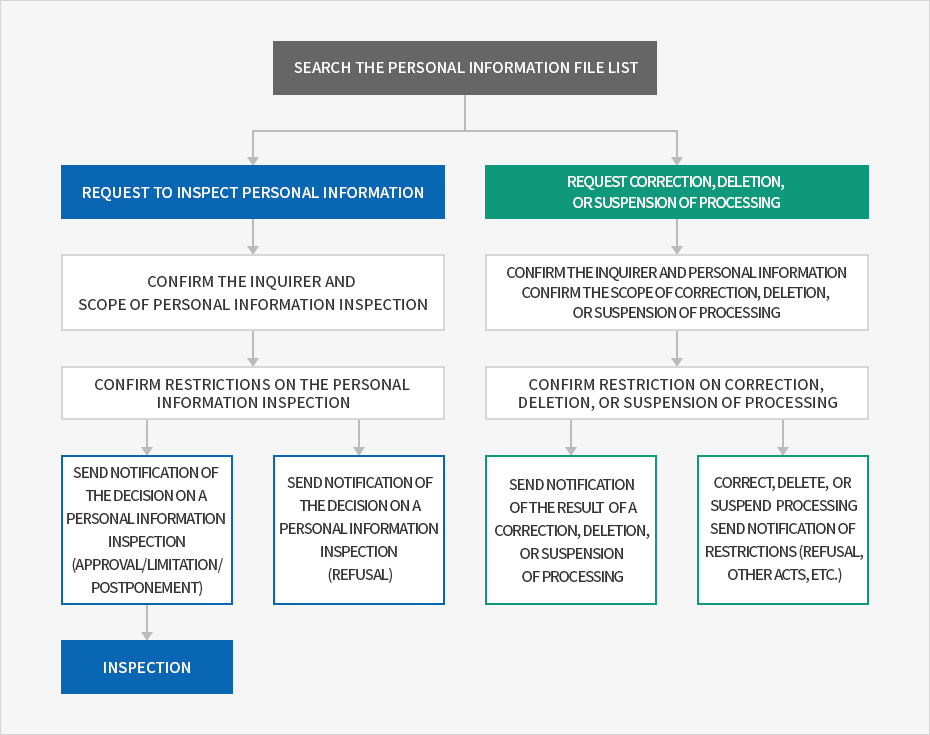

Privacy Statement / GDPR Privacy Policy
- Home
- How to Use the Website
- Privacy Statement / GDPR Privacy Policy
All private information handled by Invest KOREA is collected, retained and managed in accordance with the relevant Acts.
The Personal Information Protection Act suggests general norms for the processing of the personal information. Invest KOREA shall treat the collected and retained information in compliance with the Act in a legal and appropriate manner in order to conduct public affairs properly and to protect the rights and interests of the users.
Invest KOREA respects the rights and interests of the users including the request for inspecting, modifying, deleting and suspending the personal information processing regulated by the relevant Act. The users shall file for an administrative appeal in accordance with the Administrative Appeals Act for the infringements on their rights and interests.
Invest KOREA established the following regulations for the processing of the personal information and shall disclose them to protect the personal information and rights and interests in accordance with Article 30 of the Personal Information Protection Act and smoothly handle the grievances of the users related to their personal information.
Article 1 (Purpose of the personal information processing)
- ① Invest KOREA collects a minimum amount of personal information to provide services to our clients and resolve their complaints.
- ② The purpose of the processing of the personal information files that are registered and disclosed by Invest KOREA in accordance with Article 32 of the Personal Information Protection Act shall be as follows:
| number | Name of the personal information file | Grounds for operation | Purpose of the processing |
|---|---|---|---|
| 1 | KOTRA Express subscriber | Consent from the information player | Foreign investment magazine subscription |
| 2 | Online investment consultation inquirer | Consent from the information provider | To answer online inquiries |
Article 2 (Processing and retention period of the personal information)
- ① During the retention period of the personal information in accordance with the Act or when collecting the personal information from the information player, Invest KOREA shall process and retain the personal information within the processing and retention period that has been consented by the information player.
-
② The processing and retention period of the personal information shall be as follows:
Processing and retention period of the personal information : Number,Name of the personal information file,Grounds for operation,Retention period Number Name of the personal information file Grounds for operation Retention period 1 KOTRA Express subscriber Consent from the information player Until the withdrawal of the member from Invest KOREA 2 Online investment consultation inquirer Consent from the information provider 5 years - For more detailed information about Invest KOREA's personal information file registration, please visit the Personal Data Protection Laws in Korea website (www.privacy.go.kr) → Privacy information → View/request personal information → and use the personal information file retrieval menu.
Article 3 (Providing the personal information to the third party)
In principle, Invest KOREA processes the personal information of an information player within the scope defined under the purpose for collecting and using the personal information of the information player and shall not process the information that exceeds the scope of the purpose or provide the information to the third party without the consent from the information player excluding the following exceptions:
- 1. When Invest KOREA obtains a separate consent from the information player;
- 2. When there is a special regulation specified under the Act;
- 3. When Invest KOREA clearly recognizes the need to provide the personal information to the third party for the interests of the life, physical body or property of the information player or the third party as the information player or legal representative is in a situation where he cannot express his intention or Invest KOREA cannot obtain prior consent of the information player due to the unclear address;
- 4. When the personal information that is required for statistics and academic research is unrecognizable;
- 5. When the protection committee has reviewed and decided the case where the matters under the jurisdiction defined by a different Act cannot be executed as the personal information has been used for other purposes or has not been delivered to the third party;
- 6. When the information is needed to provide it to foreign governments or international organizations to carry out treaties and other international agreements;
- 7. When it is necessary for investigation of a crime or prosecution;
- 8. When it is necessary for a court to perform its judicial affairs; and
- 9. When it is necessary for executing a punishment, care and custody or protective disposition.
Article 4 (Entrustment of the personal information processing)
-
① Invest KOREA entrusts the following affairs related to the processing of the personal information to smoothly process the personal information:
Entrustment of the personal information processing : Number,Entrusted affairs,Company Name,Tel.,Hours Number Entrusted affairs Company Name Tel. Hours 1 Operation and maintenance of the KOTRA information system S.G.A 070-7308-1004 09:00~18:00 2 Operation of the customer information center Transcosmos Korea inc. 02-790-8106 09:00~18:00
Article 5 (Rights and duties of the information players and how to exercise them)
-
① An information player (a legal representative shall exercise the rights if the information player is less than 14 years old) shall exercise the following rights related to the protection of the personal information at any time:
- 1. Request for inspection of the personal information
- 2. Request for modification where there is an error
- 3. Request for deletion
- 4. Request for suspension of the processing.
- ② The information player shall exercise his rights in accordance with Section 1 by submitting the document as provided by Annex 8. Enforcement Ordinance of the Personal Information Protection Act via mail, e-mail or fax and Invest KOREA shall respond to the request without delay.
- ③ If the information player of the personal information requests for modification or deletion of his personal information, Invest KOREA shall not use or provide the personal information of the player until such modification or deletion is completed.
- ④ The information player shall present his legal representative or agent to exercise his rights as provided by Section 1. In such case, the information player is required to submit the power of attorney in accordance with Annex 11. Enforcement Ordinance of the Personal Information Protection Act.
- ⑤ The request for suspending the process and inspection of the personal information could be limited in accordance with Article 35.5 and Article 37.2 of the Personal Information Protection Act.
- ⑥ For modification and deletion of personal information, if other Acts stipulate the particular personal information be collected, the information plyer shall not request for deletion thereof.
-
⑦ When a user rightfully requests to access, modify, delete his/her personal information, or suspend its processing, Invest KOREA will first make sure the individual making the request is the user or his/her legal representative.
* Provide any identification cards (certificate of resident registration, driver’s license, passport, etc.) to identify himself.
* If the requested person is the legal representative, any identification cards and power of attorney to identify that he is the legal representative of the information player.
* [Annex 8. Enforcement Ordinance of the Personal Information Protection Act] Request for inspecting, modifying, deleting and suspending the process of the personal information
* [Annex 11. Enforcement Ordinance of the Personal Information Protection Act] Power of Attorney -
⑧ Procedures for inspecting, modifying, deleting and suspending the personal information are as follows:
개인정보파일목록 검색
- 열람청구
- 청구 주체 확인 및 개인정보 열람 범위 확인
- 개인정보 열람 제한사항 확인
- 열람결정 통지 (허용/제한/연기) - 열람
- 열람결정 통지(거부)
- 정정·삭제, 처리정지 청구
- 청구 주체 확인 및 개인정보 정정·삭제, 처리정지 범위 확인
- 개인정보 정정·삭제, 처리정지 제한사항 확인
- 정정·삭제, 처리정지 결과 통지
- 정정·삭제, 처리정지 제한사항 통지(거절, 타 법령 관련 사항 등)


Article 6 (Items for processing the personal information)
Invest KOREA processes the following items for the personal information:
| Number | Name of the personal information file | Items for the personal information | |
|---|---|---|---|
| 1 | KOTRA Express subscriber | Required | Email address, name, nationality, gender, date of birth |
| 2 | Online investment consultation inquirer | Required | Name, e-mail, phone number |
Article 7 (Procedures and methods of destructing the personal information)
Invest KOREA, in principle, shall delete the personal information without delay if its purpose to process the personal information is achieved. However, it shall not be applied for the personal information that needs to be preserved in accordance with other Acts. The procedures, terms and methods of destructing the personal information are as follows:
-
A. Procedures
Any unnecessary personal information and personal information file shall be destroyed in accordance with the below procedure of the inside policy under the responsibility of the person in charge of the personal information.- Destruction of the personal information.
The personal information shall be destroyed without delay from the end date of its holding period. - Destruction of the personal information file
If the personal information file becomes unnecessary due to the achievement of the processing of the personal information file, abolition of the relevant service and the end of the business, the personal information file shall be destroyed without delay from the day that recognizes the processing of the personal information is no longer needed.
- Destruction of the personal information.
-
B. Methods
- Electronic data shall be destroyed by using technical methods to make it impossible to restore such data.
- Paper documents that contain the personal information shall be shredded or incinerated.
Article 8 (Measures to secure the safety of the personal information)
Invest KOREA shall implement the following technical, managerial and physical measures to secure the safety of the personal information in accordance with Article 29 of the Personal Information Protection Act.
- 1. Minimum number of staff in charge of the personal information processing and training Invest KOREA shall designate the minimum number of staff to handle the personal information.
- 2. Restricted access to the personal information
Invest KOREA shall carry out necessary measures to restrict access to the personal information through empowerment, change and cancellation of access authorities for the database system that processes the personal information. It shall also operate intrusion prevention systems to deny any unauthorized external access. - 3. Preservation of the access records
Invest KOREA shall store access records (weblog data, summarized information, etc.) to the personal information data system for at least six months. - 4. Encryption of the personal information
The personal information of the users are stored and managed in an encrypted manner. Invest KOREA also implements special security measures including encrypting important data when storing or transferring. - 5. Installation and periodic updates of computer security programs
Invest KOREA shall install and periodically update the computer security programs to prevent the personal information from leakage and damage due to hacking or computer viruses. - 6. Access control of the unauthorized personnel
Invest KOREA shall operate a separate physical storage facility for its personal information data systems and establish and operate relevant access control procedures.
Article 9 (Persons in charge of personal information protection)
Invest KOREA has designated the folowing persons to be in charge of protecting personal information and settleing related complaints (in accordance with Article 31 (1) of the Personal Information Protection Act):
| Director | Manager | Officer |
|---|---|---|
| Head of Invest KOREA Lyu Jae Won Tel : 02-3460-7400 |
Investment Planning Department Director-General Choi Jangsung Tel : 02-3460-7824 |
Investment PR Team Jiin Shin Email : jiin.shin@kotra.or.kr Tel : 02-3460-7842 Fax : 02-3460-7920 |
Article 10 (Request for inspection of the personal information)
-
① An information player shall request for the inspection of the personal information in accordance with Article 35 of the Personal Information Protection Act via the following team. KOTRA shall strive to swiftly handle the request of the information player for the inspection of the personal information.
※ Department in charge
- Team : Investment Public Relations Team
- Officer : Jiin Shin
- Contact : Tel. 02-3460-7842 / E-mail jiin.shin@kotra.or.kr / Fax 02-3460-7920
- ② Apart from the Team mentioned in Section 1, the information player shall be able to request for the inspection of the personal information via the website (www.privacy.go.kr) of the Privacy Information Protection Portal run by the Ministry of Government Administration and Home Affairs.
※ Privacy Information Protection Portal → Civil affairs on the personal information → Request for the inspection of the personal information (real name authentication via public I-pin service is required.)
Article 11 (Remedies for infringement on rights and interests)
An information player shall consult the following organizations for remedies regarding the infringement on the personal information.
-
Personal Information Infringement Report Center (Run by the Korea Internet & Security Agency)
- Description : Report infringement on the personal information, request for consultation
- Website : http://privacy.kisa.or.kr
- Tel : 118
- Address : (138-950) 135 Jungdaero, Sonpa-gu Seoul-si, Personal Information Infringement Report Center, the Korea Internet & Security Agency
-
Personal Information Dispute Mediation Committee
- Duties : personal information dispute mediation, collective dispute mediation (civil resolution)
- Website : http://www.kopico.go.kr
- Tel : 1833-6972
- Address : (03171) Level 4, Government Complex Seoul, 209 Sejong-daero, Jongno-gu, Seoul
- SPO Cybercrime Investigation Department : 1301 (http://www.spo.go.kr, cid@spo.go.kr)
- National Police Agency Cyber Bureau: 182 (http://cyberbureau.police.go.kr)
Also, the information player reserves the right to demand administrative appeals in accordance with the Administrative Appeals Act for any infringement on rights and interests occurred due to the nonfeasance or measures taken by the head of a public institution for the request of the information player for inspection, modification, deletion or suspension of the personal information processing.
※ Please refer to the telephone numbers via the website (http://www.simpan.go.kr) of the Central Administrative Appeals Commission
Article 12 (Installing, operating, and refusing installation of automatic data collection tools)
Invest KOREA (IK) may use HTTP cookies, a tool that automatically collects and stores data about its users. A cookie is a small piece of data sent from an organization's web server to a user's web browser, and can be stored on the user's computer hard drive. When a user logs into IK's website, IK's web server can read the cookies on the user's web browser, collect new information about the user, and provide services without requiring any additional data input (e.g., name) by the user. Cookies only identify individual computers, not the persons using the computer. Also, users can choose whether or not to install cookies. Therefore, by changing the setting, users can select whether to allow cookies to be stored on their web browsers at all times, to be asked for permission every time before IK's web server sends cookies, or refuse to receive cookies entirely. However, should you refuse to install cookies, you may experience difficulty in using the IK website, especially in accessing certain servies that require user login.
<How to install cookies>
- 1. Internet Exlporer: click the 'Tools' menu at the top of your browser window → click 'Internet options' → select the 'Privacy' tab → set cookie handling level by adjusting the slider
- 2. Chrome: click the 'Settings' menu in the top-right corner of your browser window → click 'Show advanced settings' → click 'Content settings' in the 'Privacy' section → set cookie handling level
Article 13 (Amendment to the personal information processing policy)
① The policy shall take into effect on June 2, 2017.
② Please find below the previous personal information protection policies:
② Please find below the previous personal information protection policies: